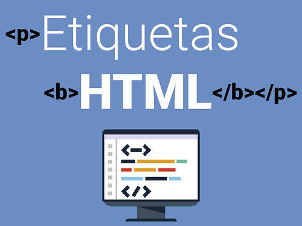

¿Qué son etiquetas semánticas?
Las etiquetas semánticas son aquellas que permiten la estructuración del documento
y permiten a las páginas web que estén mejor indexadas por los buscadores, estas
etiquetas se clasifican como semánticas si tienen que ver el significado, es decir
informar sobre lo que trata su contenido.
La palabra semántica hace relación al significado de las palabras, por decir de
otra forma, son aquellas etiquetas que indican quel contenido que tienen y de cómo se
debe formatear para mostrar el documento HTML en un cliente web.
Es necesario recalcar que a medida que hay nuevas tecnologías
como por ejemplo, la versión 5 del lenguaje HTML incluye nuevas semánticas
para la estructuración de los algoritmos. (Álvarez, 2012)
Estuctura semántica de un archivo HTML

Etiqueta Header HTML5. Tomado de: https://blognotasnocioneshtmlcss.blogspot.com/2017/02/etiqueta-header-html5.html
Cuando se trata de etiquetas semánticas, se da igual la disposición que ocupen
dentro de una página web, dado que el contenido no afectará la composición de la
sercción, sino que se ajustará de acuerdo con el tamaño de la información que tenga dentro.(Anónimo, 2017)
¿Por qué utilizar etiquetas semánticas?
La intensión con el uso de estas etiquetas es que cualquiera de los sistemas
pueda procesar un documento HTML, debido a que con estos se busca agregar información
a la Web y puedan ser interpretados por cualquier sistema informático, esto gracias a
que los diferentes motores de los sitios Web puedan identificar las diferentes sesiones.
Dentro de los más comunes se encuentran las etiquetas Header, Article, Section, Aside, Footer y Nav.(Anónimo, 2017)
